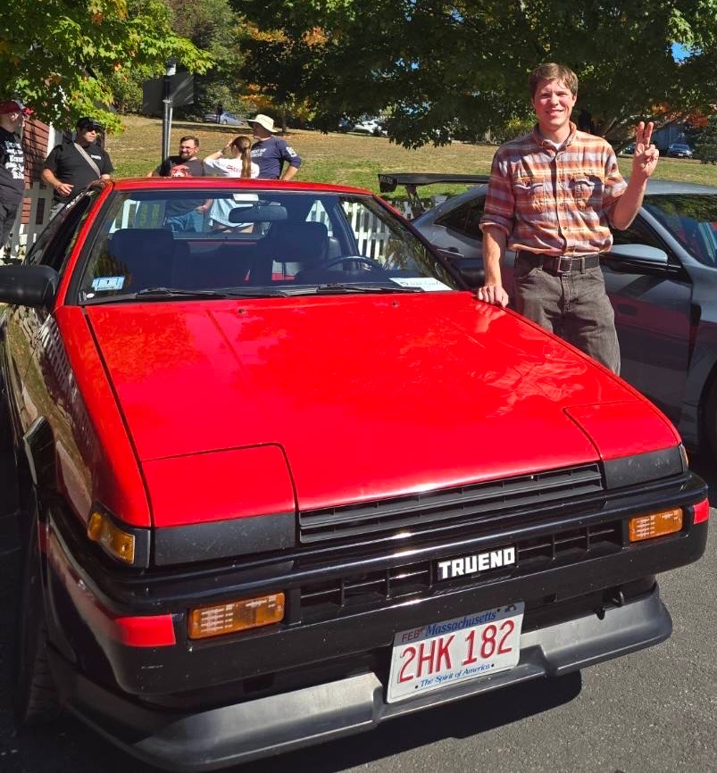

UPDATE: August 14, 2026
Due to several responsibilites adding up, I can't see myself working on this site for the next few months at least. Between college, JLPT prep, and job searching, I simply don't have the time. When I return, I think I'm going to try focusing on the AE86 page.
UPDATE: June 24th 2026
Working on my first article for the Banjo page. Click the washboard to read it. First page is complete.
A Little Bit About This Site
What is the Purpose of This Website?
The primary purpose is as follows. This is a website I am building so that I can to learn how to build a website. That's some circular logic, isn't it? Well, that's where you have to start if you want to learn something new, right? Like most of my hobbies, this will likely be done through mostly through self-study. Everything you see here is done through HTML and CSS. I bought the domain and rented the server. I'm not using a web-building service.
But that's not entertaining or useful to you, the reader. And that's what I want to do. Entertain and inform. So, I got a few things to keep you engaged too. Because I like ya a lot... But don't take that too seriously!
So What do I, the Reader Get?
Right now? Not much. This nice homepage, that cool navbar and some of my ramblings. Sorry pal. For now, that's all I can give you. However, I can tell you what I want to give you. This is all tentative, but here's what I have in mind.
- AE86 (Hachiroku) related content
- Maintenence articles
- Build info and part reviews
- Banjo related content
- Banjo info
- Tabs I've made
- Videos when I start getting confident with the instrument
- Japan Content
- Language related content
- Articles about Japan life as an American
- Personal and professional content
- Portfolio
- Random articles about stuff I find interesting
So, that's what we've got lined up. For now, all of this is staying on the homepage, however, I'm likely going to move this section to an "about" page later on when things start happening and restructure things. But for the time being, enjoy the "about me" section!


About Me
My name is Eric. I'm an American from Massachusetts. I was born in 1996 and grew up in a suburban neighborhood about an hour away from Boston. Beyond that, I'll spare you the childhood details and skip to the important stuff. In 2025, I left my career as an Electrician shortly before attaining my license to begin college and work towards an Information Technology degree. Why? I want to move to Japan.
It is with no exaggeration that I say since September of 2024, everything I've been working on has been centered around this goal. I've structured my life around attending a language exchange twice a week and interacting with the language as much as reasonably possible. I've been studying since January of 2023, but started outputting in August of 2024 on my first trip to Japan. Currently, I'm on track to attain my bachelor's degree in October of this year, and if all goes according to plan (which it will), I'll be in Japan in 2027. This time for good.
All that aside, a few other things about me should be pretty self-evident based on this site. I've owned a 1985 AE86 Toyota Corolla GT-S since 2016 and accumulated a wealth of mechanical experience including but not limited to engine building, suspension modification, and electrical troubleshooting, among other things. Also, I started playing the banjo around the same time I started studying Japanese. When I got serious about Japanese, I dropped it entirely for a year, but I picked it back up in December of 2025 with an intent to get good and form or join a bluegrass band in Japan.
I don't really know what else to put here. Honestly, it's been really hard trying to figure out how to even organize this and what to include. Well, stick around and you'll probably find out more, one way or another. Thanks for stopping by!
~ Eric